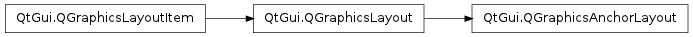

QGraphicsAnchorLayout ¶

Note
This class was introduced in Qt 4.6
Synopsis ¶
Functions ¶
- def addAnchor (firstItem, firstEdge, secondItem, secondEdge)
- def addAnchors (firstItem, secondItem[, orientations=Qt.Horizontal | Qt.Vertical])
- def addCornerAnchors (firstItem, firstCorner, secondItem, secondCorner)
- def anchor (firstItem, firstEdge, secondItem, secondEdge)
- def horizontalSpacing ()
- def setHorizontalSpacing (spacing)
- def setSpacing (spacing)
- def setVerticalSpacing (spacing)
- def verticalSpacing ()
Detailed Description ¶
The PySide.QtGui.QGraphicsAnchorLayout class provides a layout where one can anchor widgets together in Graphics View.
The anchor layout allows developers to specify how widgets should be placed relative to each other, and to the layout itself. The specification is made by adding anchors to the layout by calling PySide.QtGui.QGraphicsAnchorLayout.addAnchor() , PySide.QtGui.QGraphicsAnchorLayout.addAnchors() or PySide.QtGui.QGraphicsAnchorLayout.addCornerAnchors() .
Existing anchors in the layout can be accessed with the PySide.QtGui.QGraphicsAnchorLayout.anchor() function. Items that are anchored are automatically added to the layout, and if items are removed, all their anchors will be automatically removed.

Anchors are always set up between edges of an item, where the “center” is also considered to be an edge. Consider the following example:
layout . addAnchor ( b , Qt . AnchorLeft , a , Qt . AnchorRight ) layout . addAnchor ( b , Qt . AnchorTop , a , Qt . AnchorBottom )Here, the right edge of item a is anchored to the left edge of item b and the bottom edge of item a is anchored to the top edge of item b , with the result that item b will be placed diagonally to the right and below item b .
The PySide.QtGui.QGraphicsAnchorLayout.addCornerAnchors() function provides a simpler way of anchoring the corners of two widgets than the two individual calls to PySide.QtGui.QGraphicsAnchorLayout.addAnchor() shown in the code above. Here, we see how a widget can be anchored to the top-left corner of the enclosing layout:
layout . addCornerAnchors ( a , Qt . TopLeftCorner , layout , Qt . TopLeftCorner )In cases where anchors are used to match the widths or heights of widgets, it is convenient to use the PySide.QtGui.QGraphicsAnchorLayout.addAnchors() function. As with the other functions for specifying anchors, it can also be used to anchor a widget to a layout.
Size Hints and Size Policies in an Anchor Layout ¶
PySide.QtGui.QGraphicsAnchorLayout respects each item’s size hints and size policies. Note that there are some properties of PySide.QtGui.QSizePolicy that are not respected .Spacing within an Anchor Layout ¶
The layout may distribute some space between the items. If the spacing has not been explicitly specified, the actual amount of space will usually be 0.
However, if the first edge is the opposite of the second edge (e.g., the right edge of the first widget is anchored to the left edge of the second widget), the size of the anchor will be queried from the style through a pixel metric: PM_LayoutHorizontalSpacing for horizontal anchors and PM_LayoutVerticalSpacing for vertical anchors.
If the spacing is negative, the items will overlap to some extent.
Known issues ¶
There are some features that PySide.QtGui.QGraphicsAnchorLayout currently does not support. This might change in the future, so avoid using these features if you want to avoid any future regressions in behaviour:
- Stretch factors are not respected.
- QSizePolicy.ExpandFlag is not respected.
- Height for width is not respected.
- class PySide.QtGui. QGraphicsAnchorLayout ( [ parent=None ] ) ¶
Parameters: parent – PySide.QtGui.QGraphicsLayoutItem Constructs a PySide.QtGui.QGraphicsAnchorLayout instance. parent is passed to PySide.QtGui.QGraphicsLayout ‘s constructor.
- PySide.QtGui.QGraphicsAnchorLayout. addAnchor ( firstItem , firstEdge , secondItem , secondEdge ) ¶
Parameters:
- firstItem – PySide.QtGui.QGraphicsLayoutItem
- firstEdge – PySide.QtCore.Qt.AnchorPoint
- secondItem – PySide.QtGui.QGraphicsLayoutItem
- secondEdge – PySide.QtCore.Qt.AnchorPoint
Return type: PySide.QtGui.QGraphicsAnchor
- PySide.QtGui.QGraphicsAnchorLayout. addAnchors ( firstItem , secondItem [ , orientations=Qt.Horizontal | Qt.Vertical ] ) ¶
Parameters:
- firstItem – PySide.QtGui.QGraphicsLayoutItem
- secondItem – PySide.QtGui.QGraphicsLayoutItem
- orientations – PySide.QtCore.Qt.Orientations
- PySide.QtGui.QGraphicsAnchorLayout. addCornerAnchors ( firstItem , firstCorner , secondItem , secondCorner ) ¶
Parameters:
- firstItem – PySide.QtGui.QGraphicsLayoutItem
- firstCorner – PySide.QtCore.Qt.Corner
- secondItem – PySide.QtGui.QGraphicsLayoutItem
- secondCorner – PySide.QtCore.Qt.Corner
- PySide.QtGui.QGraphicsAnchorLayout. anchor ( firstItem , firstEdge , secondItem , secondEdge ) ¶
Parameters:
- firstItem – PySide.QtGui.QGraphicsLayoutItem
- firstEdge – PySide.QtCore.Qt.AnchorPoint
- secondItem – PySide.QtGui.QGraphicsLayoutItem
- secondEdge – PySide.QtCore.Qt.AnchorPoint
Return type: PySide.QtGui.QGraphicsAnchor
- PySide.QtGui.QGraphicsAnchorLayout. horizontalSpacing ( ) ¶
Return type: PySide.QtCore.qreal Returns the default horizontal spacing for the anchor layout.
- PySide.QtGui.QGraphicsAnchorLayout. setHorizontalSpacing ( spacing ) ¶
Parameters: spacing – PySide.QtCore.qreal Sets the default horizontal spacing for the anchor layout to spacing .
- PySide.QtGui.QGraphicsAnchorLayout. setSpacing ( spacing ) ¶
Parameters: spacing – PySide.QtCore.qreal Sets the default horizontal and the default vertical spacing for the anchor layout to spacing .
If an item is anchored with no spacing associated with the anchor, it will use the default spacing.
PySide.QtGui.QGraphicsAnchorLayout does not support negative spacings. Setting a negative value will unset the previous spacing and make the layout use the spacing provided by the current widget style.
- PySide.QtGui.QGraphicsAnchorLayout. setVerticalSpacing ( spacing ) ¶
Parameters: spacing – PySide.QtCore.qreal Sets the default vertical spacing for the anchor layout to spacing .
- PySide.QtGui.QGraphicsAnchorLayout. verticalSpacing ( ) ¶
Return type: PySide.QtCore.qreal Returns the default vertical spacing for the anchor layout.